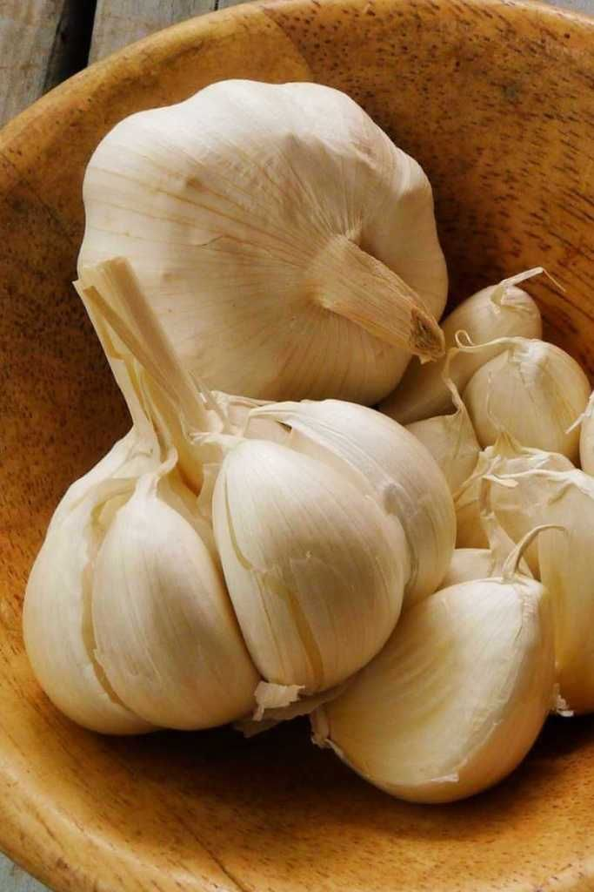
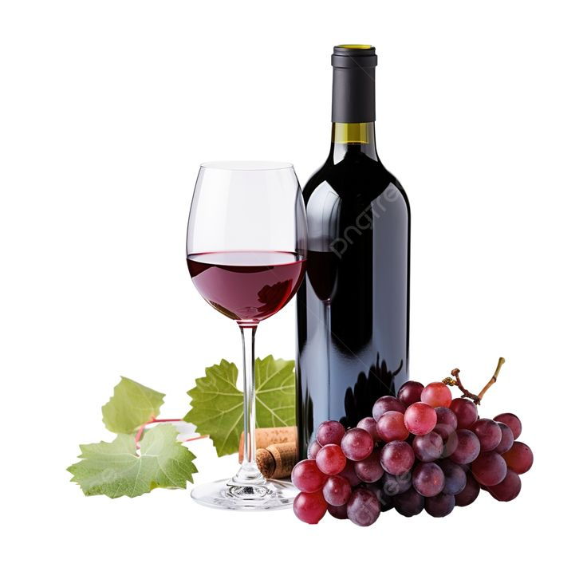

Povrće
U našoj ponudi nalaze se češnjak, luk i krumpir uzgojeni s posebnom brigom i pažnjom.
Saznaj višeMjesto domaćih okusa, obiteljske tradicije i kvalitetnih proizvoda iz općine Pićan.
Pogledaj proizvodeOPG Tončić nalazi se na području općine Pićan i već više od 20 godina njeguje obiteljsku tradiciju uzgoja domaćeg voća, povrća i proizvodnje vina. Više o našem radu možete pročitati na stranici O nama.

U našoj ponudi nalaze se češnjak, luk i krumpir uzgojeni s posebnom brigom i pažnjom.
Saznaj više
Nudimo više sorta šljiva, kruška, smokva, grožđa, jabuka i rajčica.
Saznaj više
Proizvodimo domaće crno i bijelo vino koje je dio tradicije našega gospodarstva.
Saznaj višeŽelite saznati više o našem radu, tradiciji i načinu uzgoja domaćih proizvoda? Posjetite stranicu O nama i upoznajte obiteljsku priču OPG-a Tončić.
Više o nama